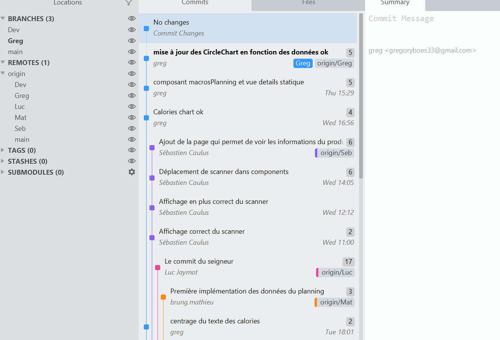
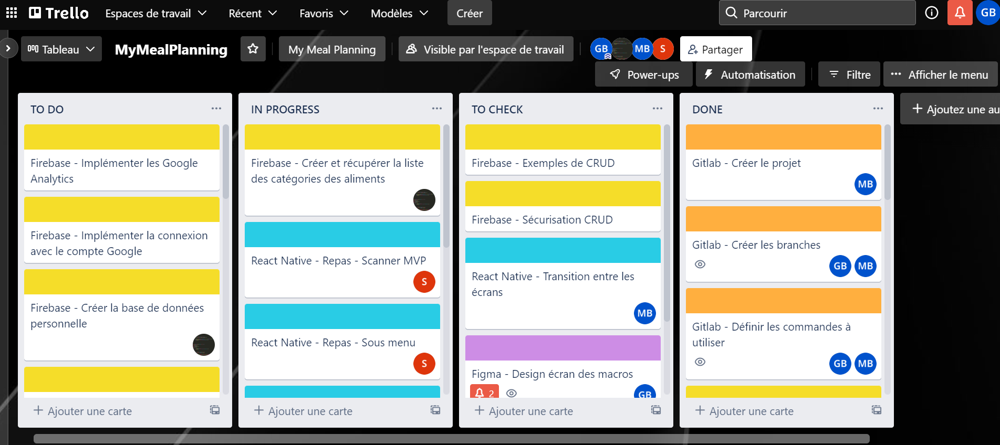

Application de planification de repas
My Meal Planning
Que vous soyez sportif de haut niveau ou du dimanche, parents ou étudiants débordés, que vous vous souciez de votre alimentation ou de votre organisation, My Meal Planning est l’application qu’il vous faut. My Meal Planning permet la planification de vos repas, en déduit votre liste de courses et son mode sportif vous permet de surveiller votre apport calorique. Nous avons fait le choix de créer un scanner qui tire ses données de la base de données alimentaire, open source et à but non-lucratif : Open Food Facts , qui répertorie les ingrédients, les allergènes, la composition nutritionnelle et toutes les informations présentes sur les étiquettes des aliments.
La naissance du projet
Sportif invétéré, Mathieu, le fondateur de My Meal Planning est parti d'un constat simple. Aucune application mobile ne satisfaisait pleinement ses besoins pour surveiller son apport calorique journalier, gérer sa liste de courses et plannifier ses repas de manière hebdomadaire. La liste de courses ainsi que le scanner de produits de consommation sont en outre souvent utilisés de façon séparée, en complément de ses applications.
-
Famille
Quoi de plus difficile que de se réinventer pour satisfaire l'appétit de nos têtes blondes, casser la routine en visualisant vos repas et en notant toutes vos envies de recettes.
-
Sportifs
Le mode sportif ajoutera la visualisation des apports nutritionnels et vous permettra de les ajuster pour atteindre vos objectifs.
-
Etudiants
Pas le temps de s'organiser pendant les périodes de rush ou d'examen ? My Meal Planning vous aide à simplifier vos courses et à plannifier vos repas.
Paysage concurrentiel
Dans un marché ultra compétitif comptant des centaines d'applications de nutrition. My Meal Planning souhaite se distinguer par une expérience utilisateur fluide et simple d'accès. Ne s'adressant pas uniquement aux sportifs, chaque utilisateur doit pouvoir planifier ses repas et gérer sa liste de courses en quelques clics. Là où les autres applis de nutrition exigent un vocabulaire nutritionnel poussé réservé aux aficionados, My Meal Planning propose une navigation simple et intuitive destinée au plus grand nombre. En outre, son scanner libre permet de visualiser les informations les plus importantes quant à la qualité des produits. Ainsi, contrairement aux applications leader du marché ( Yazio, MyFitnessPAL... ), ce projet offre de multiples fonctionnalités supplémentaires.
Contenu de l'application My Meal Planning
Connexion, Planning et repas
Toutes les fonctionnalités à portée de doigts
L'accès à l'application commence par la création d'un compte.
En effet, chaque compte est unique et propose une gestion personnalisée.
Les onglets sont lisibles et immédiatement accessibles en bas.
Le planning : coeur de l'application, celui-ci permet de visualiser la semaine en cours et de gérer ses
repas par l'appui d'une touche +.
Les repas : chaque repas est décomposé en aliments. Les aliments sont entrés en amont par l'utilisateur
ainsi que leurs valeurs nutritionnelles respectives (lorsque le mode sportif est activé) ce qui peut être
rébarbatif.
Pour éviter cette étape, My Meal Planning propose un scanner.
Scanner
Toutes les informations nutritionnelles en un clic
Le scanner libre : My Meal Planning permet grâce à son scanner d'ajouter directement un nouvel aliment réel en analysant le code barre de celui-ci. Connecté à l'API OpenFoodFacts, l'appli récupère automatiquement toutes les informations nutritionnelles de l'aliment. L'utilisateur peut ainsi contrôler la qualité de ses produits du quotidien et même identifier les allergènes. L'utilisateur peut également ajouter un nouveau produit manuellement parmi un large choix d'aliments proposés et référencées.
Liste de courses
Aider l'utilisateur dans son quotidien
La rubrique "liste de courses" permet d'ajouter des aliments à la volée mais aussi de charger tous les aliments planifiés dans la liste des repas de la semaine. Ainsi, il devient facile d'acheter directement tout ce dont on a besoin pour des repas équilibrés, à terme, l'application pourra se connecter à une application de commande en ligne afin d'acheter directement tous ces produits en quelques clics.

L'organisation
Depuis le départ, l'équipe a eu a coeur de suivre un schéma organisationnel clair et s'appuyant sur de nombreux
outils.
Figma : Mathieu a réalisé la maquette principale du projet sur figma et chacun a pu contribuer au design de sa partie par la suite. Essentielle, cette maquette nous a permis de développer nos modules en s'appuyant sur ce document graphique en vue d'une charte cohérente.
Git : Nous avons mis en place des procédures ou chacun développe ses propres fonctionnalités. Une fois celles-ci terminées, l'équipe valide puis tout et poussé sur une branche de développement. Ensuite, chaque développeur récupère cette branche ce qui limite fortement les conflits de branches et permet d'optimiser l'avancement du projet.
Trello : outil primordial afin de décrire les phases de sprint à suivre pour chaque développeur. Google Docs: pour le pitch et la nomenclature du projet. Discord: plateforeme de centralisation des liens de tous nos outils et moyen de communication choisi par l'équipe. Discord nous a également permis l'échange de liens pour la veille technique du projet.
L'équipe de My Meal Planning
Séduits par le projet, nous avons tout mis en oeuvre pour réfléchir et concevoir ensemble une application centrée autour de l'expérience utilisateur afin de réaliser un produit simple et intuitif.
Mathieu Brung / Chef de projet - Développeur
Chef du projet et créateur de l'application MyMealPlanning, Mathieu a managé avec brio l'équipe durant tout le projet afin de répartir les tâches et unifier l'ensemble du workflow (nomenclature, documentation, charte). il a également participé au développement de modules comme la liste de courses et le planning.
Luc Jaymot / Développeur Fullstack - Data
Luc a focalisé son travail sur l'ensemble des données de l'application. Paramètre majeur d'une application web et mobile, les données permettent l'accès aux produits mais aussi l'enregistrement des préférences utilisateur. L'outil firebase qu'il a du appréhender permet un accès aux données sécurisées.
Sebastien Caulus / Développeur Fullstack
Sébastien s'est occuppé de la partie scanner de l'application ainsi que de la connexion aux api. Les api ou services tiers sont essentiels à la récupération des données des produits pour délivrer des informations claires et vérifiées. Il a développé toute la partie d'ajout d'un produit.
Grégory Boes / Développeur fullstack
Concentré sur la partie des macronutriments, Grégory a développé la configuration et l'accès aux objectifs nutritionnels fixés par l'utilisateur et leur affichage sous forme de graphs. Il a également réalisé le support de communication et la partie test sur les calculs.